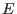
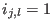
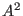
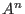
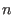

Next: Matrix Inverses, Part B Up: Matrix Arithmetic Previous: Matrix Inverses, Part A Contents Index
Row operations, as we have seen, are extremely useful (and fun). They are also easy to use, especially when we have software like Lamp to take away some of the pain of arithmetic. However, it is difficult to prove much about the results of row operations in the form in which we actually use them. Luckily there is an equivalent way to represent row operations on a matrix using identity matrices, scalar multiplication and matrix multiplication. Since we have already started to prove properties of matrices, this representation will allow us to use our skills to prove results involving row operations.
A matrix obtained from an identity matrix by a single row operation is called an elementary matrix. We usually represent such a matrix as  . Since there are three row operations, we have three types of elementary matrices.
Examples of type (1) elementary matrices:
Examples of type (2) elementary matrices:

Examples of type (3) elementary matrices:
Multiplying a matrix on the left by an elementary matrix has the same effect
as the equivalent row operation. In mathematical notation  means that
means that  is
the matrix
is
the matrix  after one row operation. It is obvious that
after one row operation. It is obvious that  is row equivalent to
is row equivalent to  .
.


Since  only if
Use a similar argument to show that
 .
.
What are the corresponding row operations for each of these five elementary matrices?
What is  ? What is  if  is even? If is odd? What does this mean in terms of row operations?